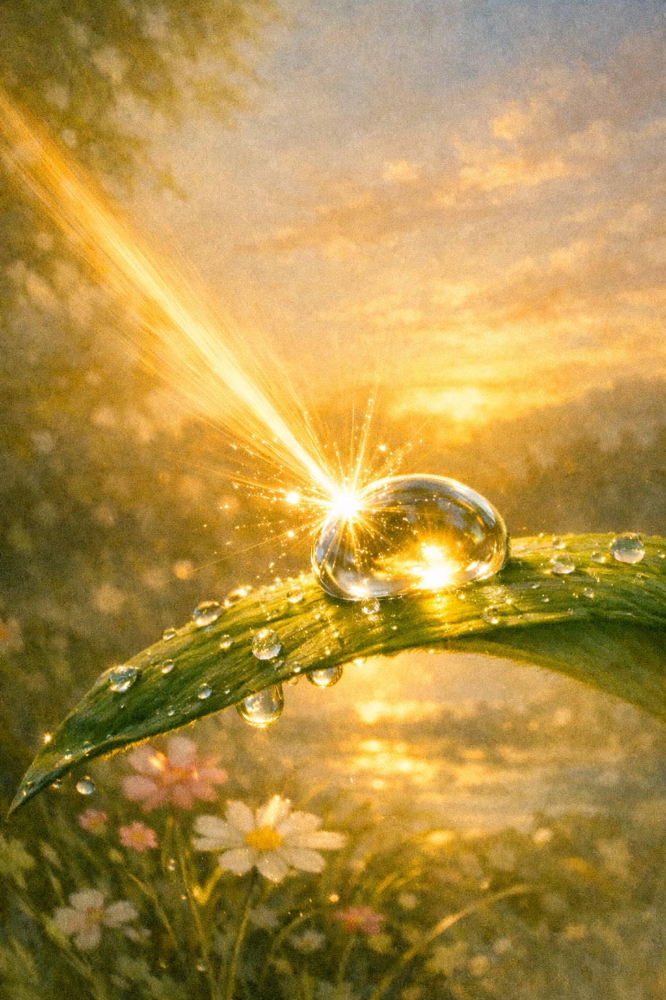

שיר על בוקר שמחייך, על קרן שמש שמובילה לטיול קטן, על הקשבה לטבע ועל שמחה שמופיעה ברגע הפשוט.
הבוקר השמים הסתכלו אלי
וחייכו בשובבות:
כמה טוב שקמת!
קרצה אלי קרן שמש שובבה.
לקחה אותי לטיול
אל האדמה הטובה,
אל הצמחים.
ליטפה את הנבטים
שזה עתה הוציאו עלים ירקרקים.
התמזגה עם הטל שעל עלה ירוק,
ושלחה אלי אלף ניצוצות של אור.
יחד הקשבנו לרוח מן הים,
ללחישות בין עלי העץ הזקן,
לפעימות לבו וחוכמתו,
המזכירות שהכול עוד חי ונושם.
המחשבות שטו,
כמו עננים המחליפים צורה,
מביאות איתן שמחה והודיה.
מולידות תקווה חדשה.
קרן השמש שלחה מבטה
אל ציפור קטנה מצייצת,
ביקשה מהלב להיפתח עוד קצת
לקסם של הרגע הפשוט הזה,
המבקש ממני רק להיות.
וכך אני הולכת בעולם,
עם צעד רך ונשימה טובה,
ומגלה בכל יום מחדש
שהשמחה בלב,
היא מתנה יקרה,
שכל יום מביא.